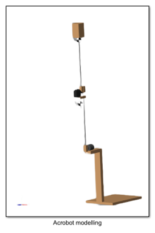
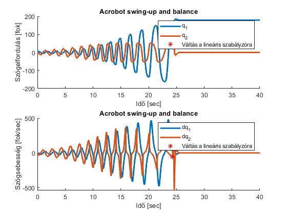
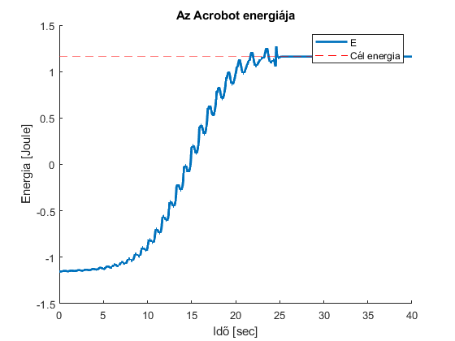
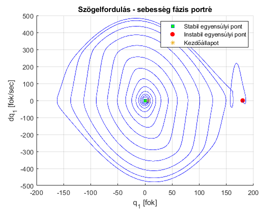
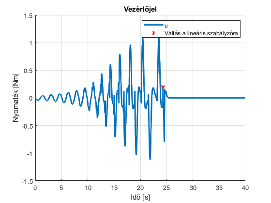
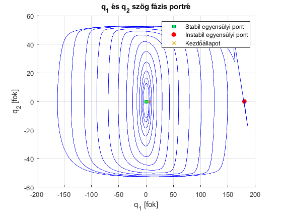
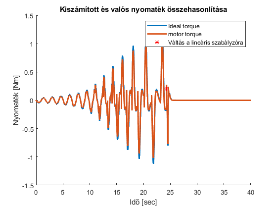
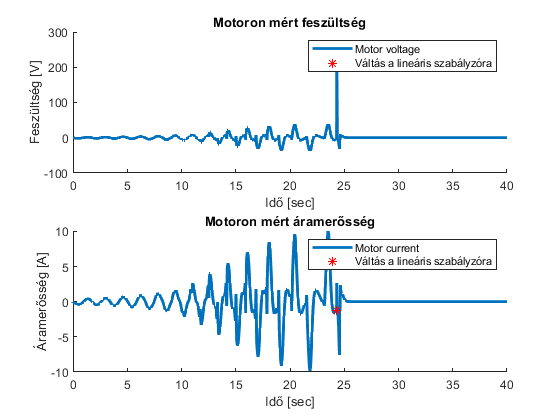

Contents
clear all; close all; clc
Betolti a valos rendszer parametereit
run('real_parameters.m');
Linearizalas a munkapont korul
q1 q2 dq1 dq2
[A,B] = linearizalas(m1,m2,l1,l2,lc1,lc2,J1,J2);
LQR szamitas
K = LQR_function(A,B);
Co =
1.0e+04 *
0 -0.0168 0 -1.8762
0 0.0407 0 4.4412
-0.0168 0 -1.8762 0
0.0407 0 4.4412 0
K =
-23.3264 -8.0912 -6.0145 -2.3465
S =
1.0e+03 *
7.0056 2.5940 1.8082 0.7415
2.5940 0.9639 0.6698 0.2748
1.8082 0.6698 0.4669 0.1914
0.7415 0.2748 0.1914 0.0785
CLP =
-2.5335 + 0.0000i
-3.8246 + 0.1379i
-3.8246 - 0.1379i
-46.4206 + 0.0000i
Szimulacio Simulinkben
open_system('Real_Acrobot_Simulation.slx') Sim_time = 40; out = sim('Real_Acrobot_Simulation',Sim_time); % set view convention -> Y up (XY) % standard views -> Front view
Warning: Block diagram
'Real_Acrobot_Simulation' contains 1 algebraic
loop(s). To see more details about the loops
use the command <a
href="matlab:Simulink.BlockDiagram.getAlgebraicLoops(bdroot);">Simulink.BlockDiagram.getAlgebraicLoops('Real_Acrobot_Simulation')
</a> or the command line Simulink debugger by
typing <a
href="matlab:sldebug(bdroot);">sldebug('Real_Acrobot_Simulation')
</a> in the MATLAB command window. To
eliminate this message, set Algebraic loop to
"none".
Found algebraic loop containing:
Real_Acrobot_Simulation/Acrobot modelling/Joint2/Motor/PID Controller/Parallel P Gain/Internal Parameters/Proportional Gain
Real_Acrobot_Simulation/Acrobot modelling/Joint2/Motor/PID Controller/D Gain/Internal Parameters/Derivative Gain
Real_Acrobot_Simulation/Acrobot modelling/Joint2/Motor/PID Controller/Filter/Cont. Filter/SumD
Real_Acrobot_Simulation/Acrobot modelling/Joint2/Motor/PID Controller/N Gain/Internal Parameters/Filter Coefficient
Real_Acrobot_Simulation/Acrobot modelling/Joint2/Motor/PID Controller/Sum/Sum_PID/Sum
Real_Acrobot_Simulation/Acrobot modelling/Solver Configuration1/EVAL_KEY/INPUT_1_1_1
Real_Acrobot_Simulation/Acrobot modelling/Solver Configuration1/EVAL_KEY/STATE_2
Real_Acrobot_Simulation/Acrobot modelling/Solver Configuration1/EVAL_KEY/OUTPUT_2_0
Real_Acrobot_Simulation/Acrobot modelling/Joint2/Motor/PS-Simulink Converter3/EVAL_KEY/RESHAPE
Real_Acrobot_Simulation/Acrobot modelling/Joint2/Motor/Sum (algebraic variable)
 Get parameters
run('getParameters.m');
Abrak megjelentese
run('Visualization_real.m');
      